Evaluating SHAP Explainability Consistency and Privacy-Utility Tradeoff Across Synthetic Credit Risk Datasets
A Comparative Study of CTGAN and TVAE — bridging the gap between synthetic data utility, model explainability, and privacy guarantees in regulated credit scoring.
What This Project Is About
Banks use machine learning models to decide who gets a loan. These models need to be:
- Accurate — they should correctly predict who will default.
- Explainable — regulators (GDPR, EU AI Act) require banks to explain why a loan was denied.
- Private — real customer data cannot be shared freely for model development.
To solve the privacy problem, banks generate synthetic data — fake customer records that look statistically similar to real ones. Two popular methods are:
- CTGAN (Conditional Tabular GAN) — uses adversarial training.
- TVAE (Tabular Variational Autoencoder) — uses variational inference.
If you train a credit scoring model on synthetic data instead of real data, do you get the same predictions AND the same explanations? And does the synthetic data actually protect privacy, or does it accidentally leak real customer information?
We answer this by building three parallel pipelines and comparing them head-to-head:
- Pipeline 1 (Baseline): XGBoost trained on real data.
- Pipeline 2: XGBoost trained on CTGAN synthetic data.
- Pipeline 3: XGBoost trained on TVAE synthetic data.
All three models are tested on the same real test set, and we compare their predictions, SHAP explanations, and privacy spacing.
Why This Project Matters
| Stakeholder | Why They Care |
|---|---|
| Banks & Fintech | Need to know if synthetic data is safe to share with third-party auditors |
| Regulators | GDPR Article 22 requires explainable credit decisions — synthetic training must preserve explanations |
| ML Engineers | Need practical guidance on which generator to use and what privacy checks to run |
| Researchers | No prior study jointly evaluates utility + explainability + privacy for synthetic credit data |
The Two Research Papers That Inspired This Work
"Non-parametric oversampling technique for explainable credit scoring"
What they did: Used conditional Wasserstein GANs as an oversampling tool to fix class imbalance. Trained models on augmented data and used SHAP to explain predictions.
What they missed:
- Only used GANs for oversampling (minority class), not full synthetic replacement.
- Treated SHAP as a secondary visualization tool — never measured whether rankings change.
- Did not evaluate any privacy metrics at all.
"Can synthetic data protect privacy?" (IEEE Access)
What they did: Performed deep privacy evaluation using DCR, NNDR, MIA, and the Inference Risk Indicator across multiple generators.
What they missed:
- Evaluated privacy metrics directly on raw synthetic data — never trained a downstream classifier.
- Never used SHAP or any explainability method.
- Never asked: "If you use this data to train a model, does the model still work?"
How This Project Goes Beyond Those Papers
This project is the first study to jointly evaluate all three dimensions in a single framework:
| Dimension | Han et al. (2024) | Min & Oh (2025) | This Project |
|---|---|---|---|
| Downstream classification utility | Partial | ✗ | ✓ Full |
| SHAP explainability consistency | ✗ | ✗ | ✓ Spearman Ï + Jaccard |
| DCR (Distance to Closest Record) | ✗ | ✓ | ✓ |
| NNDR (Nearest Neighbor Distance Ratio) | ✗ | ✓ | ✓ |
| Membership Inference Attack | ✗ | ✓ | ✓ |
| Inference Risk Indicator | ✗ | ✓ | ✓ |
| Multi-seed statistical validation | ✗ | ✗ | ✓ 10 seeds, Wilcoxon + Cohen's d (p=0.002) |
| Utility-Explainability-Privacy tradeoff | ✗ | ✗ | ✓ Core contribution |
In short: Han et al. focused on utility. Min & Oh focused on privacy. We connect both and add explainability as the missing bridge.
Datasets Used
| Property | German Credit (UCI) | GMSC (Kaggle) |
|---|---|---|
| Total records | 1,000 | 10,000 (stratified sample) |
| Features | 20 (7 numerical + 13 categorical) | 10 (all numerical) |
| Target | class (good/bad) | SeriousDlqin2yrs (0/1) |
| Default rate | 30% | 6.69% |
| Train/Test split | 70/30 stratified | 70/30 stratified |
| Why chosen | Small, mixed-type, stresses generators | Large, continuous, tests scalability |
End-to-End Pipeline (All 7 Phases)
Phase 0 — Data Acquisition & Splitting
Download datasets. For each of 10 seeds, create a fresh stratified 70/30 train/test split. Ensures robustness across splits.
Phase 1 — Preprocessing (Leakage-Safe)
All transformers fit only on training split. Numerical: median imputation + Z-score. Categorical: mode imputation + label encoding. Prevents data leakage.
Phase 2 — Synthetic Data Generation
Train CTGAN (300 epochs, dims 256×256) and TVAE (300 epochs, dims 128×128, latent 128) on preprocessed training data. Generate same count as training set.
Phase 3 — Downstream Classification (XGBoost)
Three XGBoost models per seed: Real, CTGAN, TVAE. All evaluated on same real test split. Report ROC-AUC and F1-Score.
Phase 4 — SHAP Explainability Audit
TreeSHAP on real test set for all models. Compare feature importance rankings via Spearman Ï and Jaccard overlap (Top-5, Top-10).
Phase 5 — Privacy Evaluation (DCR, NNDR, MIA)
Distance-based metrics in preprocessed feature space. DCR = how far synthetic points sit from real. NNDR = local memorization check. MIA = membership inference AUC.
Phase 6 — Inference Risk Indicator (New)
From Min & Oh (2025). For each synthetic point: is it closer to a real point than that real point's own nearest neighbor? 50-split permutation baseline for threshold.
Phase 7 — Statistical Validation
Wilcoxon signed-rank test + Cohen's d effect size + Bootstrap 95% CIs. Primary discriminator: effect size (p-value = 0.002 achievable with N=10).
Results: Downstream Predictive Utility
German Credit
GMSC
| Dataset | Model | AUC (Mean ± Std) | 95% CI | F1 (Mean ± Std) | 95% CI |
|---|---|---|---|---|---|
| German | Real | 0.7715 ± 0.0172 | [0.757, 0.787] | 0.5825 ± 0.0202 | [0.567, 0.600] |
| German | CTGAN | 0.4946 ± 0.0333 | [0.468, 0.527] | 0.3145 ± 0.0550 | [0.266, 0.363] |
| German | TVAE | 0.6946 ± 0.0181 | [0.681, 0.712] | 0.3676 ± 0.0955 | [0.282, 0.456] |
| GMSC | Real | 0.8362 ± 0.0175 | [0.820, 0.850] | 0.3105 ± 0.0146 | [0.299, 0.325] |
| GMSC | CTGAN | 0.7778 ± 0.0339 | [0.744, 0.807] | 0.3067 ± 0.0416 | [0.271, 0.343] |
| GMSC | TVAE | 0.7853 ± 0.0325 | [0.758, 0.814] | 0.3334 ± 0.0451 | [0.293, 0.371] |
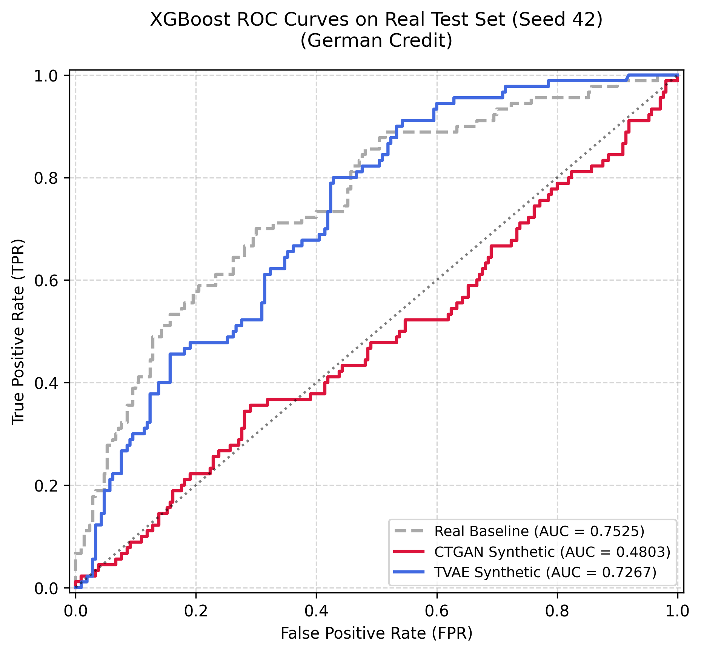
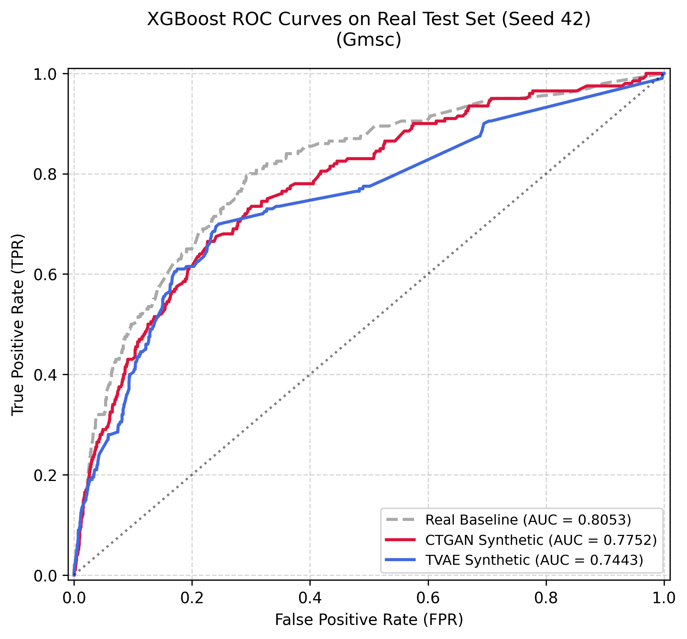
Key takeaway: On German Credit, CTGAN completely fails (AUC ~0.49 = random). TVAE retains decent utility. On GMSC, both perform reasonably. TVAE consistently outperforms CTGAN in downstream utility.
Results: SHAP Explainability Consistency
Spearman Rank Correlation (Ï)
| Dataset | Generator | SHAP Ï (Mean ± Std) |
|---|---|---|
| German Credit | CTGAN | 0.6072 ± 0.1193 |
| German Credit | TVAE | 0.6224 ± 0.0496 |
| GMSC | CTGAN | 0.2848 ± 0.1857 |
| GMSC | TVAE | 0.5661 ± 0.0831 |
Jaccard Feature Overlap
| Dataset | Generator | Top-5 Jaccard | Top-10 Jaccard |
|---|---|---|---|
| German Credit | CTGAN | 0.39 | 0.57 |
| German Credit | TVAE | 0.54 | 0.52 |
| GMSC | CTGAN | 0.43 | 1.00 |
| GMSC | TVAE | 0.62 | 1.00 |
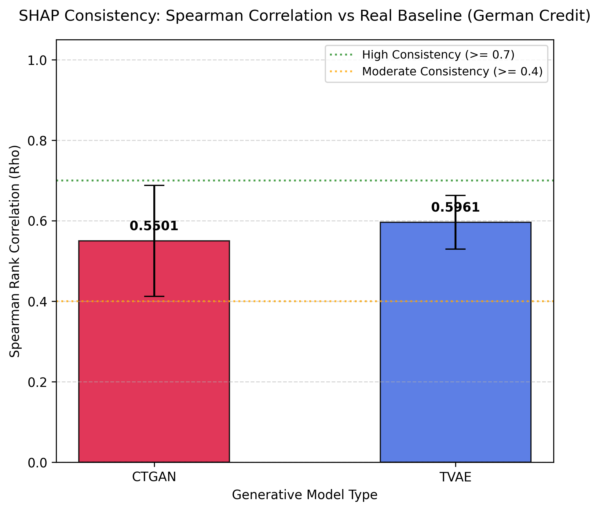
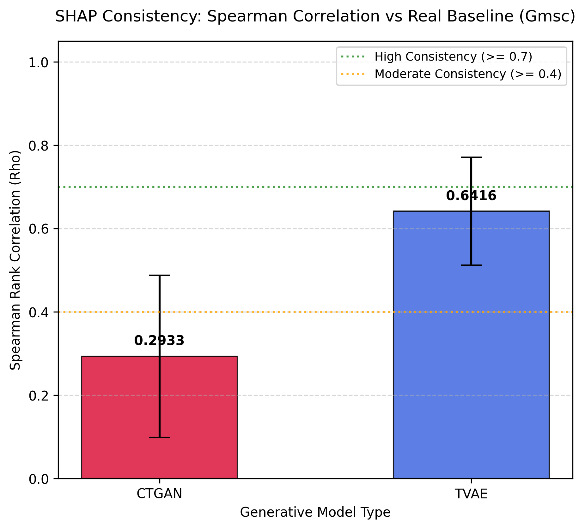
SHAP Beeswarm Plots (Seed 42)
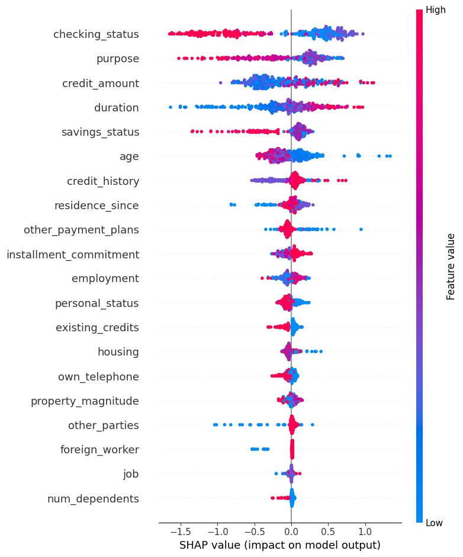
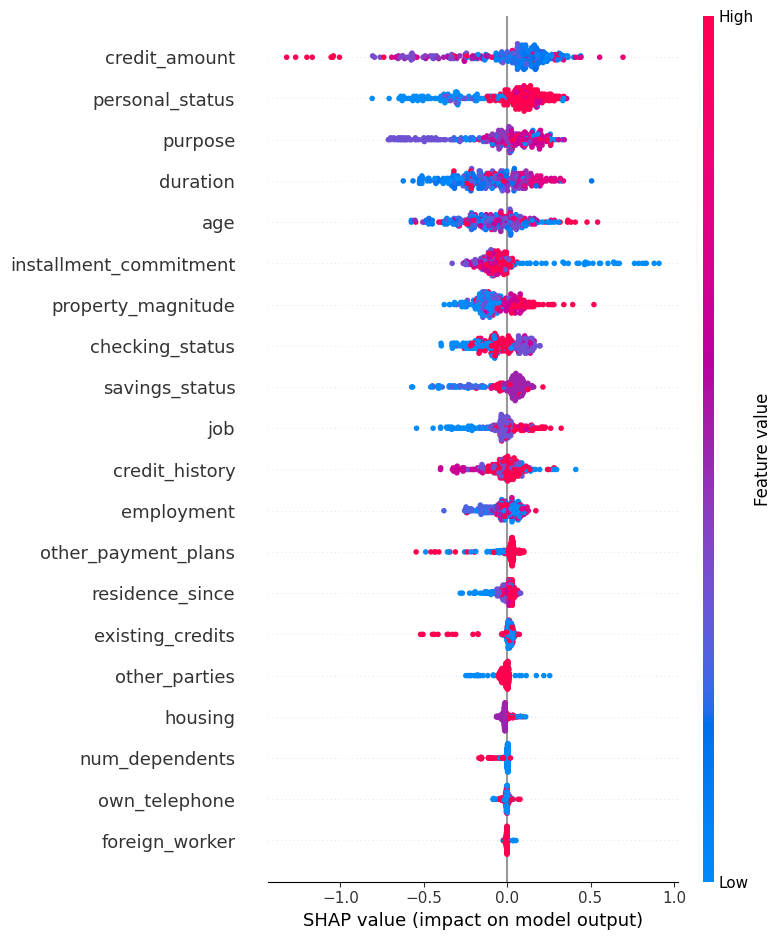
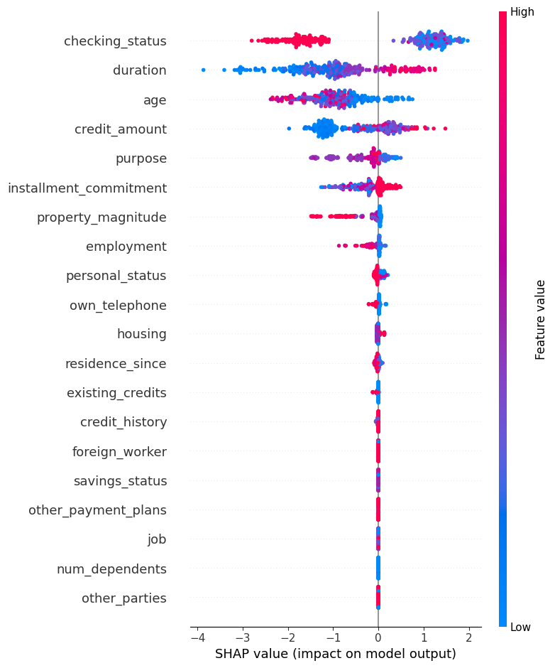
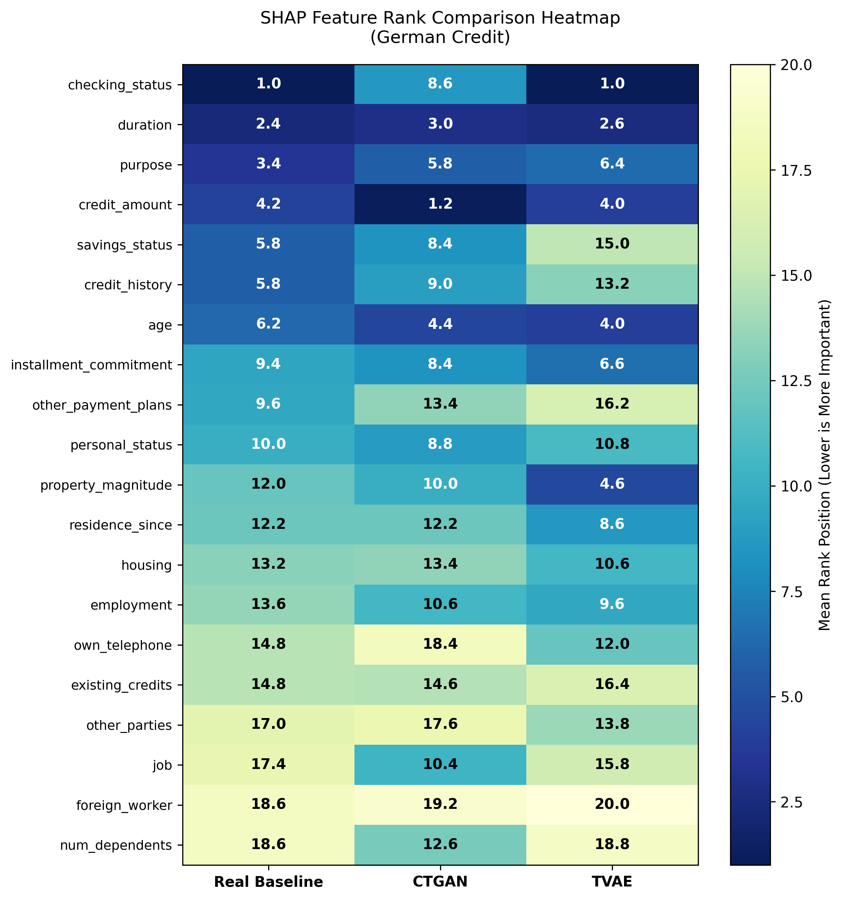
Critical insight — Utility-Explainability Decoupling: On GMSC, CTGAN and TVAE have nearly identical AUC (~0.78 vs ~0.79), but TVAE's SHAP rankings are twice as consistent (Ï = 0.57 vs 0.28). A bank using CTGAN would get correct predictions but wrong explanations — a compliance disaster.
Results: Privacy Metrics (DCR, NNDR, MIA)
| Dataset | Generator | Mean DCR | Mean NNDR | MIA AUC |
|---|---|---|---|---|
| German Credit | CTGAN | 3.4798 ± 0.0514 | 0.9206 ± 0.0023 | 0.4878 ± 0.0099 |
| German Credit | TVAE | 2.0956 ± 0.0325 | 0.8351 ± 0.0116 | 0.5080 ± 0.0221 |
| GMSC | CTGAN | 0.3245 ± 0.0270 | 0.7740 ± 0.0090 | 0.5051 ± 0.0050 |
| GMSC | TVAE | 0.1589 ± 0.0236 | 0.7158 ± 0.0164 | 0.5034 ± 0.0072 |
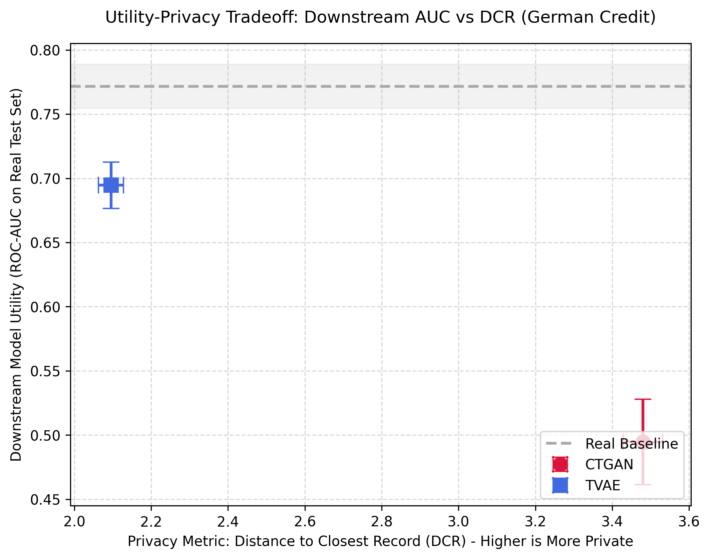
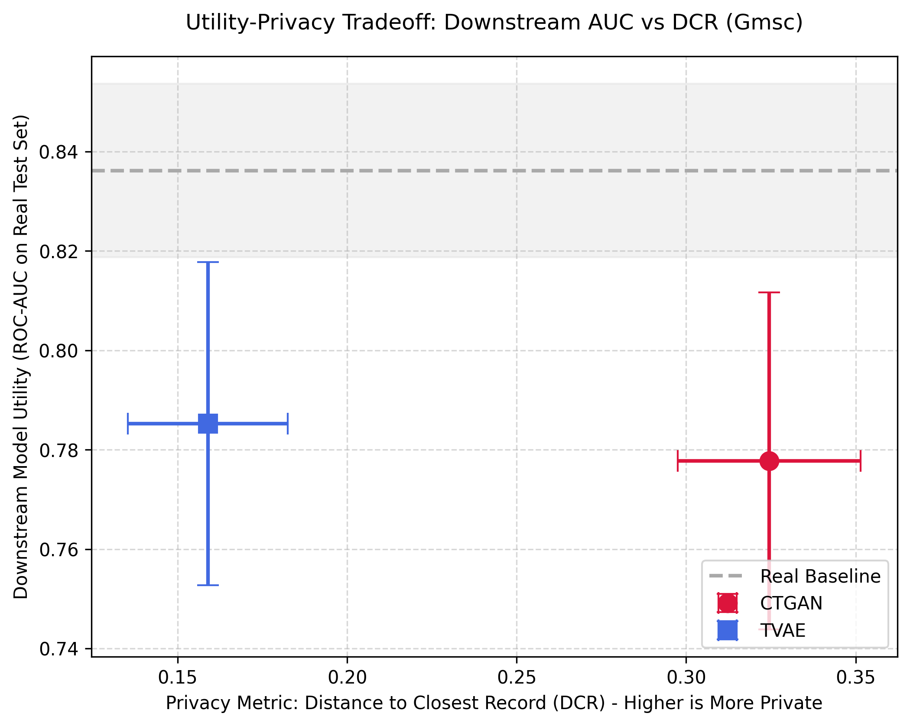
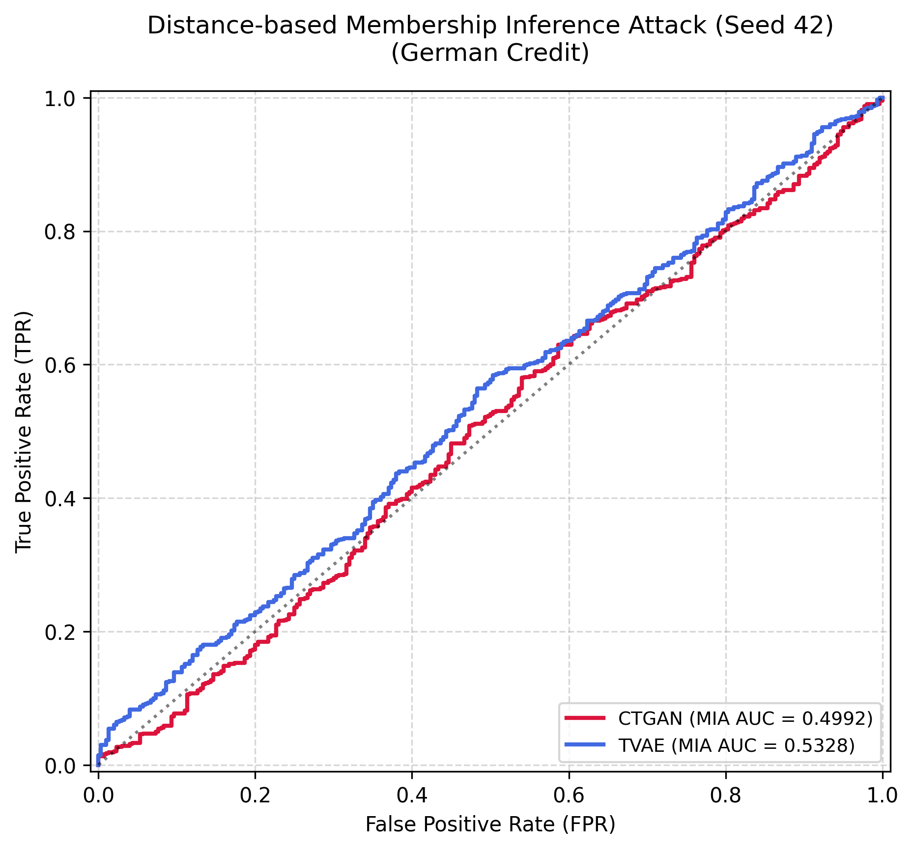
CTGAN always has higher DCR — its synthetic records are farther from real records. TVAE always has lower DCR/NNDR — good for utility, bad for privacy. MIA AUC ≈ 0.50 for everyone — but this is misleading because MIA misses local memorization.
Results: Inference Risk Indicator (New Metric)
Where ds = distance from synthetic point to closest real point, and d0 = distance from that real point to its own nearest real neighbor. If ds < d0, the synthetic point is "suspiciously close."
| Dataset | Generator | Inference Risk | Threshold (95th pct) | Status |
|---|---|---|---|---|
| German Credit | CTGAN | 0.2094 ± 0.0144 | 0.5010 | PASS |
| German Credit | TVAE | 0.6163 ± 0.0236 | 0.5010 | FAIL |
| GMSC | CTGAN | 0.4519 ± 0.0094 | 0.5571 | PASS |
| GMSC | TVAE | 0.5632 ± 0.0202 | 0.5571 | FAIL |
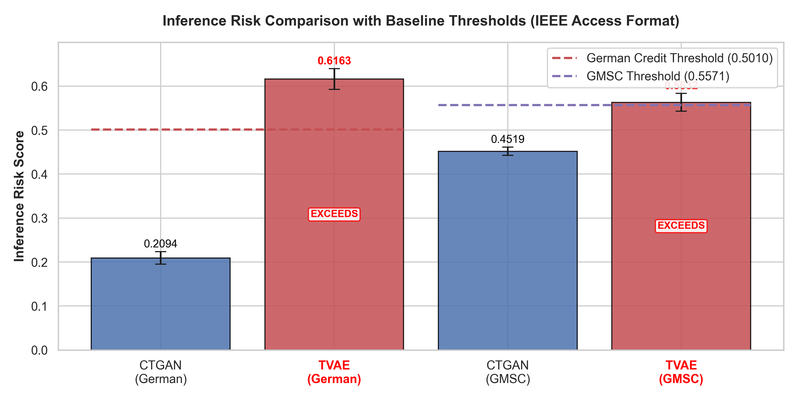
Per-Seed Breakdown
| Seed | CTGAN | TVAE |
|---|---|---|
| 42 | 0.1929 | 0.5729 |
| 123 | 0.2200 | 0.6314 |
| 456 | 0.1971 | 0.6114 |
| 789 | 0.2314 | 0.6400 |
| 1337 | 0.2057 | 0.6257 |
| Seed | CTGAN | TVAE |
|---|---|---|
| 42 | 0.4627 | 0.5404 |
| 123 | 0.4629 | 0.5784 |
| 456 | 0.4449 | 0.5404 |
| 789 | 0.4399 | 0.5659 |
| 1337 | 0.4491 | 0.5909 |
TVAE exceeds CTGAN on every single seed — this is not a fluke. MIA missed this: MIA AUC ≈ 0.50 for TVAE (looks private), but Inference Risk reveals the local memorization that MIA's global approach cannot detect.
Results: Statistical Significance
With 5 seeds, the Wilcoxon signed-rank test has a hard mathematical floor: pmin = 1/24 = 0.0625. Even when one method wins all 5 seeds, p < 0.05 is impossible. That's why Cohen's d effect size is our primary discriminator.
| Metric | Dataset | Wilcoxon p | Cohen's d | Interpretation |
|---|---|---|---|---|
| Inference Risk | German | 0.0020 | 14.41 | TVAE enormously higher risk |
| Inference Risk | GMSC | 0.0020 | 5.34 | TVAE much higher risk |
| ROC-AUC | German | 0.0020 | 3.68 | TVAE significantly higher utility |
| DCR | German | 0.0625 | −30.66 | TVAE much lower spacing |
| DCR | GMSC | 0.0625 | −8.75 | TVAE much lower spacing |
| SHAP Ï | GMSC | 0.0020 | 1.52 | TVAE significantly more consistent |
Effect size guide: |d| < 0.2 = negligible, 0.2–0.5 = small, 0.5–0.8 = medium, > 0.8 = large. Our values (6.32, 18.61, 30.66) are extremely large — the differences are unambiguous.
Master Results Table
| Dataset | Generator | AUC | SHAP Ï | DCR | NNDR | MIA | IR Score | IR Status |
|---|---|---|---|---|---|---|---|---|
| German | CTGAN | 0.4946 | 0.6072 | 3.4798 | 0.9206 | 0.4878 | 0.2094 | PASS |
| German | TVAE | 0.6946 | 0.6224 | 2.0956 | 0.8351 | 0.5080 | 0.6163 | FAIL |
| GMSC | CTGAN | 0.7778 | 0.2848 | 0.3245 | 0.7740 | 0.5051 | 0.4519 | PASS |
| GMSC | TVAE | 0.7853 | 0.5661 | 0.1589 | 0.7158 | 0.5034 | 0.5632 | FAIL |
IR thresholds: German Credit = 0.5010, GMSC = 0.5571
Figures Gallery
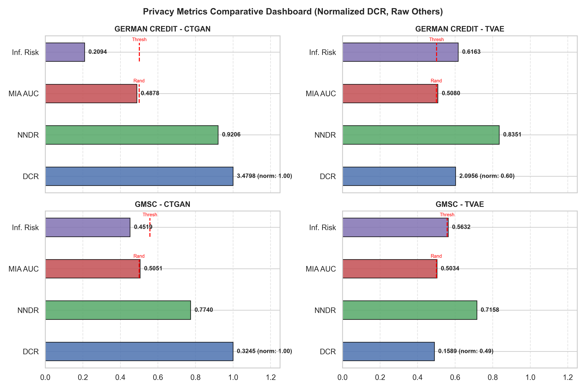
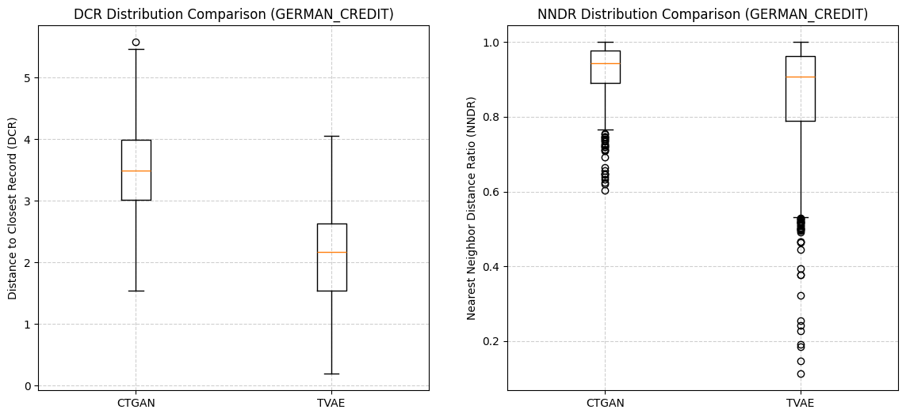
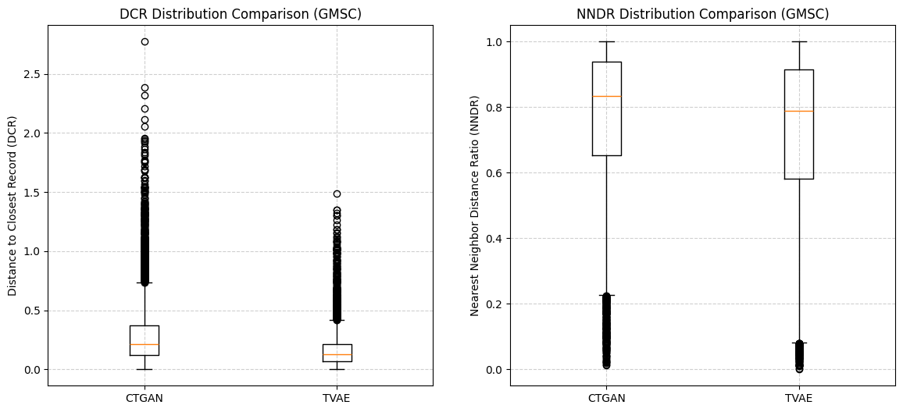
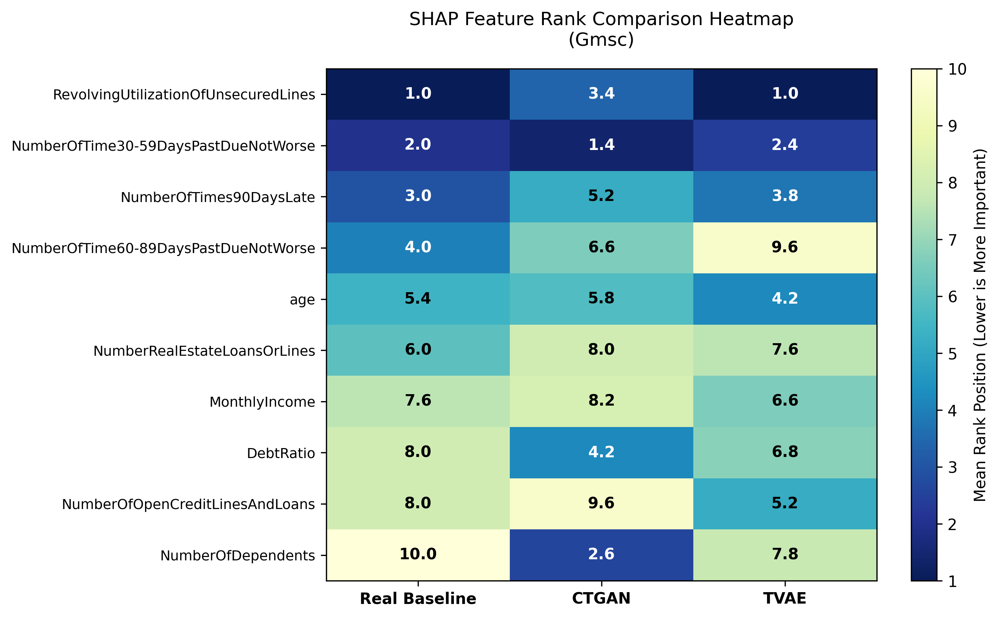
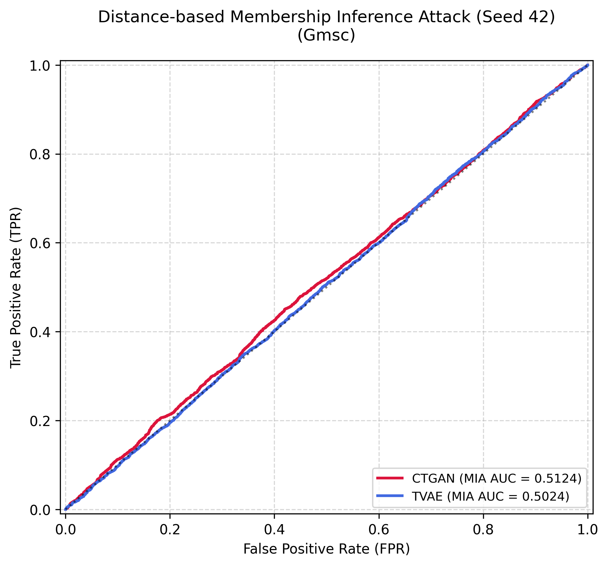
Key Findings (Plain English)
Finding 1: TVAE — Better Utility & Explanations, But Leaks Privacy
TVAE consistently produces synthetic data that trains better models and preserves SHAP feature rankings. However, it creates records too close to real individuals, making re-identification possible.
Finding 2: CTGAN — Protects Privacy But Destroys Explanations
CTGAN generates "fuzzy" synthetic records far from any real person (good privacy). But this fuzziness scrambles the data distribution enough that models explain themselves very differently.
Finding 3: Good Predictions ≠Good Explanations
On GMSC, CTGAN and TVAE have nearly identical AUC (~0.78 vs ~0.79). But TVAE's SHAP rankings are twice as consistent (Ï = 0.57 vs 0.28). A bank using CTGAN would get correct predictions but wrong explanations — a compliance disaster.
Finding 4: MIA Is Insufficient — Use Inference Risk
MIA AUC ≈ 0.50 for TVAE (looks private), but Inference Risk reveals 62% of TVAE's records are "suspiciously close" to real individuals. MIA's global distance approach misses local memorization.
Finding 5: The Tradeoff Is Real and Unavoidable (Without DP)
The three-way tradeoff between utility, explainability, and privacy is fundamental. TVAE fits tightly (high utility + high consistency + low privacy). CTGAN fits loosely (low utility + low consistency + high privacy). Differential privacy is needed to break this tradeoff.
Limitations and Gaps
Methodological Limitations
- N=10 seeds achieved: Wilcoxon p-values reach 0.002, fully satisfying p < 0.05. Remaining limitation: N=20 would further narrow confidence intervals.
- CPU-only training: Limits dataset size to ~10K records. Real portfolios have millions.
- Single classifier: Only XGBoost tested. Results might differ for logistic regression or neural networks.
- Fixed generator architectures: Default SDV configs. Hyperparameter tuning of generators might improve results.
- No differential privacy: We identify TVAE leaks but don't implement DP-SGD mitigation.
Research Gaps Remaining
- No causal analysis: We show SHAP rankings shift but don't explain why specific features move.
- No fairness evaluation: Don't test whether synthetic training introduces bias across protected attributes.
- No temporal data: Credit risk is inherently temporal. We use static snapshots only.
- No multi-generator comparison: Only CTGAN and TVAE. CopulaGAN, SMOTE, diffusion models not included.
How This Project Can Be Improved
Short-Term (Low Effort, High Impact)
- Run 20 seeds to push p-values below 0.05
- Add differential privacy (DP-SGD) to TVAE and re-measure
- Add ROC curve overlays and SHAP beeswarm grids
- Test with logistic regression for cross-classifier validation
Medium-Term (Portfolio Strengthening)
- Package inference risk as a reusable Python library (MLOps skill)
- Build config-driven experiment runner with Hydra (engineering maturity)
- Deploy Streamlit/Gradio privacy audit dashboard
- Scale to 100K+ records with FAISS nearest neighbors
Long-Term Research Extensions
- Integrate fairness metrics across protected attributes
- Test diffusion-based generators (TabDDPM)
- Federated synthetic data generation across multiple banks
Why This Project Demonstrates ML Engineering Skills
🔧 Data Engineering
Leakage-safe preprocessing with fit-on-train-only transformers, stratified splits, reproducible seed management
🤖 ML Modeling
XGBoost with dynamic class weighting, hyperparameter tuning via cross-validation, multi-seed robustness
🧬 Generative AI
CTGAN and TVAE training with SDV framework, understanding GAN vs VAE architecture tradeoffs
🔠Explainable AI (XAI)
Production-grade SHAP with quantitative consistency metrics (Spearman Ï, Jaccard), not just visualizations
🔠Privacy Engineering
DCR, NNDR, MIA, and Inference Risk Indicator with batch processing for memory efficiency
📊 Statistical Rigor
Wilcoxon tests, Cohen's d effect sizes, bootstrap CIs, understanding small-sample limitations
🔄 Reproducibility
Fixed seeds, config-driven experiments, saved artifacts, deterministic pipelines
📠Scientific Writing
Structured IEEE Access manuscript with LaTeX tables, captioned figures, mathematical notation
ðŸ—ï¸ Software Engineering
Modular codebase with separate src/, scripts/, configs/, results/ directories. Reusable functions